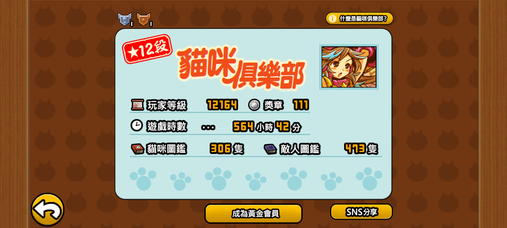
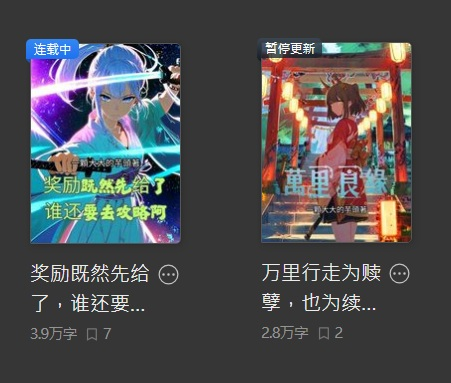

跨越維度的程式碼編織者 | SPACE CAT MISSION
起源於長庚大學的數據星雲，曾參與多項跨星系開源項目，專注於邊緣運算與量子數據的可視化呈現。在 2024 年，成功開發出一套能自動編譯低熵程式碼的系統。擅長在極限環境下進行 Web App 的架構設計，目標是將技術的光芒傳播到更遠的數位邊疆。

這是我在 Web Programming 課程中的旗艦項目。結合了 Bootstrap 5 的響應式設計與多層次 CSS 特效，展現了如何將複雜的深空數據，轉化為直觀且具有科幻美感的介面。